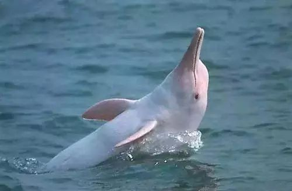
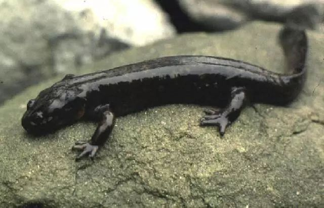
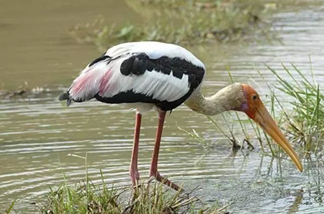
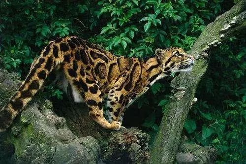
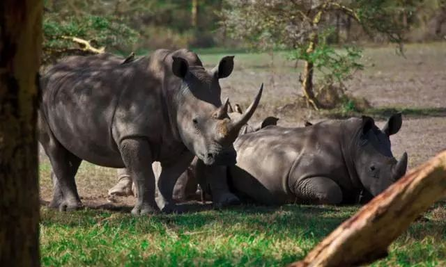

白鳍豚
|  | 白暨豚科（学名：Lipotidae）：是哺乳纲、鲸目的一科水生动物，仅有一个物种即“白暨豚”（Lipotes vexillifer）。“暨”音 jì；媒体也常写作“白鳍豚”，是中国特有的一种小型淡水鲸。体呈纺锤形，体长1.5-2.5米，体重可达230千克。吻部似鸟喙般向前伸出，窄而长，吻尖略向上翘，约30厘米。额顶显著隆起，鼻孔长在头顶，呼吸时，头部先出水，喷出的水花不高。眼极小，在口角后上方。耳孔呈针眼状。背鳍三角形，鳍肢较宽，末端钝圆，尾鳍呈新月形。体表背面呈青灰色，腹面为白色，尾鳍并不出水。 主要生活在长江中下游及与其连通的洞庭湖、鄱阳湖、钱塘江等水域中，通常成对或10余头在一起，喜在水深流急处活动，善潜水。白暨豚是食肉动物，口中约有130个尖锐牙齿，为同型齿。以淡水鱼类为食，常在晨昏时游向岸边浅水处进行捕食。也吃少量的水生植物和昆虫。呼吸时，头部先出水，然后全部露出水面，在水面游动2米后，再入水中。寿命可达30多年,2007年被宣布功能性灭绝。 |
滇池蝾螈
| 滇池蝾螈（Cynops wolterstorffi ），一般雌性大于雄性；圆柱状的躯干，侧扁发达的尾；四肢细弱，前肢四指后肢五趾，指趾无爪无蹼；皮肤柔软无鳞；背面和体侧以黑色为主，多有土黄色背脊线，腹面以桔黄色或桔红色为主，在颏喉和躯干区缀以不规则黑色粗条状纹；生殖季节雄性尾呈深蓝色。中国特有的一种两栖动物，50年代还很常见，因为种种原因，到上世纪80年代已经绝迹。 |  |
白头鹳
|  | 白头鹳是一种大型涉禽,集群生活在沿海及内陆沼泽、泛洪区，在长江中下游、四川东部、福建、广东、海南繁殖,在云南蒙自越冬,属鹳形目、鹳科,身长100厘米左右,体羽白色,背部呈金属绿的深色纹,胸部有黑色横带,腿为红色。白头鹳集群生活在沿海及内陆沼泽、泛洪区,繁殖季节取决于季风条件,遇旱年不繁殖。筑巢于水中大树上,以鱼为主食。曾在滦河口、福州、西藏拉萨分别采到标本,并被列为国家二级保护动物,但从上世纪50年代后就一直无野生报道,因此断定,中国境内可能灭绝。 |
台湾云豹
| 台湾云豹（拉丁学名：Neofelis nebulosa brachyurus），属于台湾特有亚种的猫科动物，也是台湾岛上最大型的野生动物之一。云豹全身淡灰褐色，身体两侧约有6个云状的暗色斑纹，这也是它之所以叫云豹的原因。而身体两侧的深色的云纹正是很好的伪装。因此，它们在丛林里生活，很不容易被人发现。1972年，由于人类的过度捕杀与栖息地被破坏，台湾云豹再未见踪迹，2013年4月，台湾学者宣布，其可能已经灭绝。 |  |
中国犀牛
|  | 中国犀牛是生长在中国的三种犀牛（印度犀、苏门犀、爪哇犀）的种群统称，一般体长在2.1-2.8米，高1.1-1.5米，重1吨。曾广泛分布在中国的华中地区和华南地区，栖息在接近水源的林缘山地地区。皮肤有又硬又黑呈深灰带紫色，上面附有铆钉状的小结节；在肩胛。颈下及四肢关节处有宽大的褶缝，使身体看起来就像穿了一件盔甲。雄性鼻子前端的角又粗又短，而且十分坚硬，所以人们又称之为“大独角犀牛”。犀牛角是一种珍贵的清热凉血中药材，其皮和血也可以入药，在中国宋朝就有用犀牛角的记载，但由于人类的活动和过度开发，使得它们的栖息地逐年减少；再加上它们头部的犀角的经济和药用价值极高，使它们从远古时代便受到人类的大肆猎杀，且被捕杀数量离近代越近越多，就这样它们终于在20世纪初在中国几乎踪迹全无，并于1922年在中国彻底消失。 |